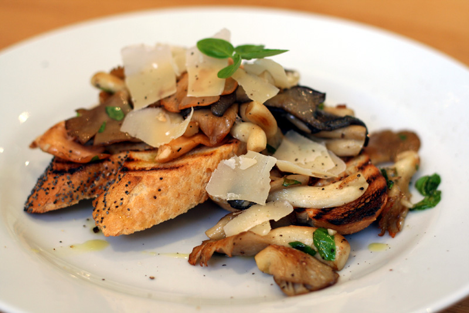

Back to Recipes
Mushrooms on Toast

A perfect, quick and easy breakfast, or even an afternoon treat, that can be glammed up, and added to, or kept simple.
I'll mention a few of my favourite extras as optional, but you can literally add anything to these.
This receipe servers 1, but is very easy to scale up.
Prep Time: 5 - 10 mins
Cook Time: ~15mins
Serves: 1
Ingredients:
- 100g Fresh and cleaned Oyster Mushrooms,
- Half an oinon, your preference,
- A garlic glove,
- Bread to toast, sourdough works best, but any will do, one or two slices, depends how hungry you are!
- A hand full of chopped fresh parsley
Some Optional Ingredients You Could Include:
- Lardons/Pancetta
- Cherry tomatoes
- Grated hard cheese, something like cheddar, or menchego works exceptionally well!
Lets Cook:
- First off, lets warm up our pan with a little olive oil, to a medium to medium high heat. Be sure to be using regular olive oil and not
extra virgin and this isn't great to cook with. Whilst your pan is heating, you can dice you onions and slice your garlic.
- With your pan hot, chuck in your mushrooms whole, making sure they aren't stacked one on top of the other, but evenly distributed.
Leave to fry gernly for 3-5mins undisturbed. If the pan is too hot, just turn it down a little.
- Once your mushrooms have started to lightly brown, add in the chopped onions and give the pan a quick toss before leaving for a
for a further 3-5mins, depending what optional extras you plan to pop in, this is a good time, apart from the cheese,
that goes on at the end!
- Add a knob of butter and your sliced garlic to the pan, season to taste, toss, and leave for about another 5mins,
or until the garlic starts to lightly brown
- In this time, pop in your bread to grill gently, or pop in the toaster.
- Once the toast is done, get ready to plate up. Pour the contents over you toast, now is the time to add the grated cheese if you wanted any,
and sprinkle with your fresh chopped parsley
- Most importantly of all, Enjoy!